六项补充评审索引
三层范围
区域—总体—重点区共用同一 provisional 底盘并联动复算。
重点区域
众智园、AI 原点社区、大钟寺分别承担企业、居民、轨道/路缘接口。
建筑
入口、候车、坡道、骑行停放和服务台是可逆接口，不发布高度或容积率。
更新项目
P0 基线、P1 可逆试点、P2 专业复核后条件扩展；任一硬门失败即回退。
来源
政策、招标、标准、方法论文与包内数据分级登记，不把方法参考写成本地现状。
假设
官方边界、权属、交通量、容量、现场可达和公众接受仍待有日期证据。
互惠发布门与三处接口
不是先算总效率，而是先问企业收益有没有挤掉居民最慢路径。四个冲突窗口共享同一组停止条件。
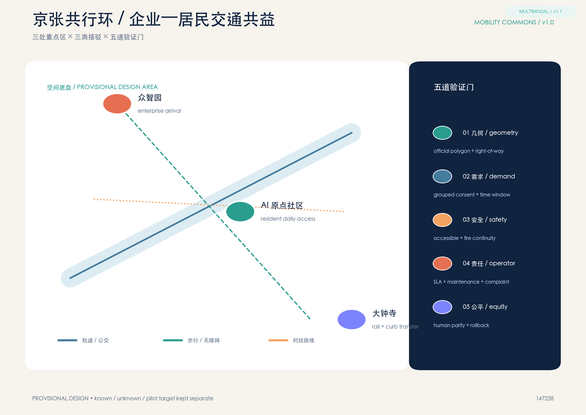
把用地看成服务接口
企业入口、社区日常与轨道换乘是三种责任界面；所有面积和边界仍来自 provisional 图层，不是法定红线。
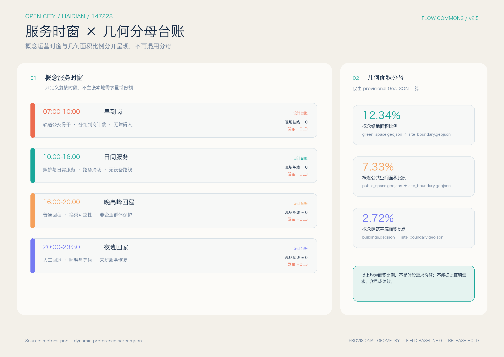
三处重点区，三种不同的空间原型
众智园清河前厅、AI 原点照护环和大钟寺四象限换乘厅分别回应企业门前、居民日常与轨道换乘。每处都把企业请求、居民回报、停止条件和待补证据画在同一张图上；PROV-KEY-003 不是大钟寺站点锚点，不据此平移或发布站点级结论。

三种备选，五级尺度，居民权利不被挤出图面
ALT-A 拒绝，ALT-B 修改，ALT-C 进入设计复核。每一级只回答一个空间问题，所有权利、回退和撤回条件仍保持 HOLD，直到现场资料和责任确认。
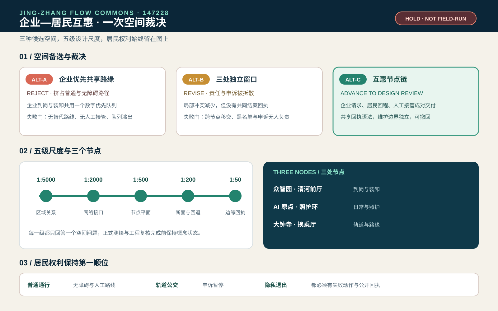
轨道公交为骨干，步行与无障碍为底线
班车、物流和路缘窗口只能补充公共交通；断网、雨雪或冲突时，人工与公共交通等价路径继续开放。

遮阴、停歇和雨天回退先服务最慢路径
蓝绿关系只用于识别候选路径；没有树冠、坡度、热舒适、排水和现场连续性证据时，不发布健康或防洪绩效。
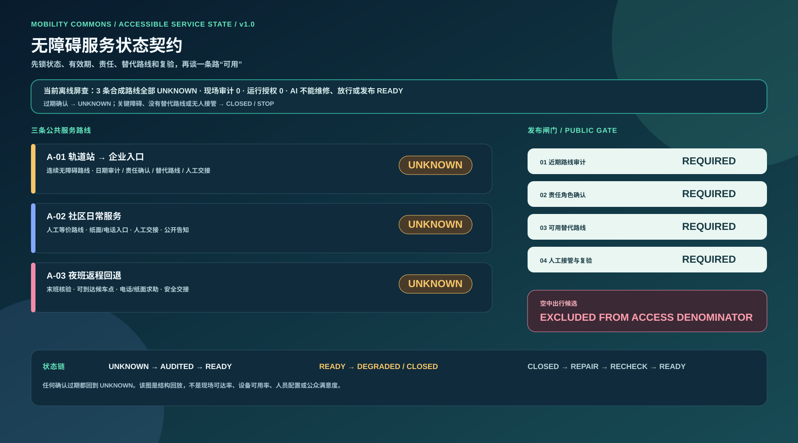
AI 整理冲突，不替人放行
AI 可以聚合分组需求、解释冲突和回放证据；不能任命责任人、发布 READY、覆盖旧记录或把合成 PASS 变成运营授权。
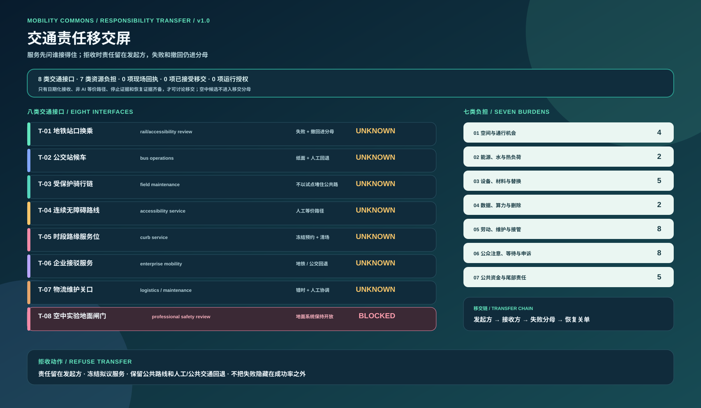
先锁分母，再谈强度和收益
5 个资源分母仍未锁定；现场测量、已接受责任和运行授权均为 0。失败与撤回请求继续留在分母。
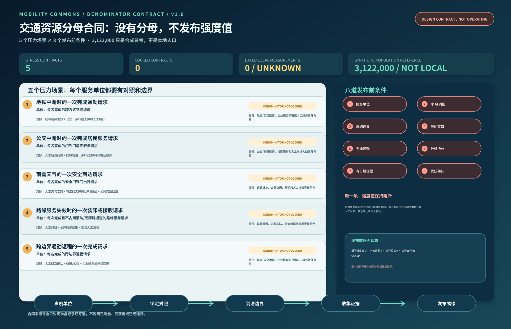
三层空间、三处重点区和一条到站—到家链
区域层、总体层和重点区共用同一底盘；产业服务、居民日常、交通、市政、蓝绿、更新和治理都回接到可复核工件。
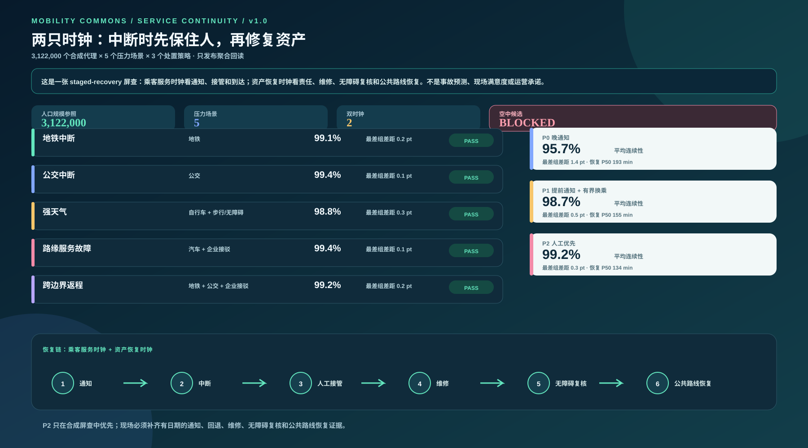
四个时窗分别判断，不拿平均值盖住最慢一段
8 类合成人群在 4 个时窗、4 个候选策略中逐格回放；原始满意度最高者也必须通过首末公里、无障碍和非企业群体保护门。
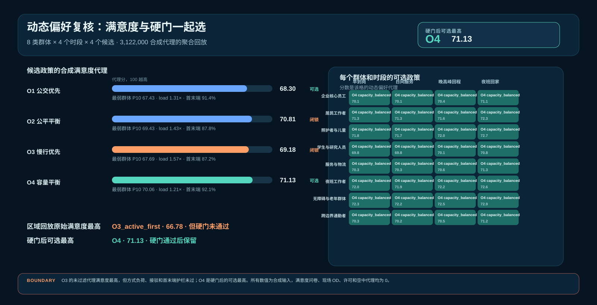
企业接驳不能挤掉轨道公交与居民可达
方式竞争保护把公共交通替代、接驳份额、车辆公里和最弱群体可达差距设为停止条件；空中与无管理扩张继续 fail closed。
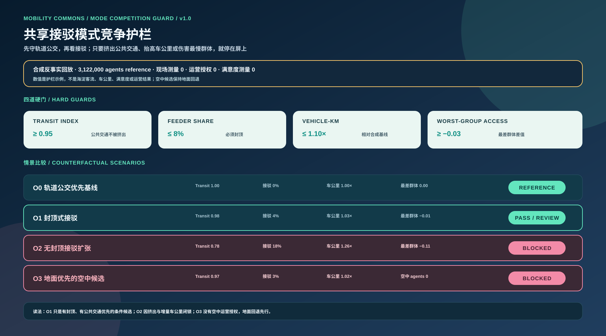
把合成流量重新落回可审查的空间接口
空间交通图谱只把组别、时窗与交通方式连接到 provisional 区域和接口；不把分析图当真实站位、客流或法定道路。
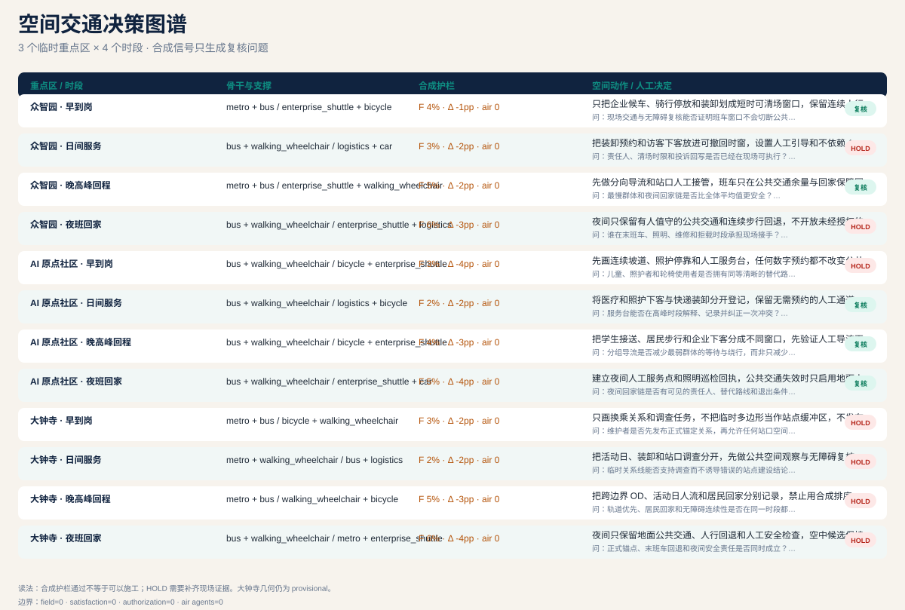
包内可复算，现场仍应停止
互惠发布门 15 项检查与 4 个负例通过；现场审计、责任接受、锁定分母与授权缺一项，G1 继续 HOLD。
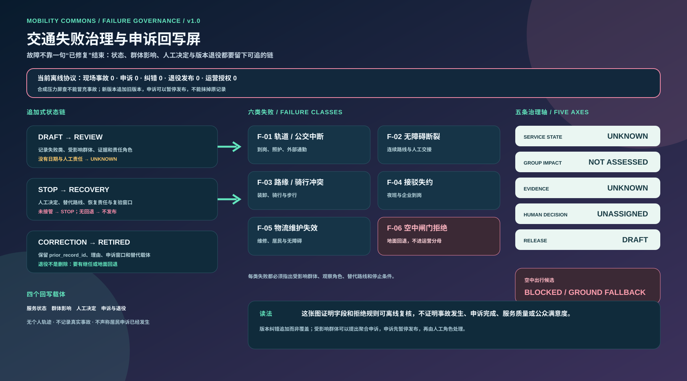
边界说明：图上 PASS 只证明包内结构可重放；不证明真实客流、人员值守、无障碍绩效、公众接受、运营许可或实施结果。
Package replay: PASS · field release: HOLD · accepted transfers: 0 · locked denominators: 0
Package replay: PASS · field release: HOLD · accepted transfers: 0 · locked denominators: 0